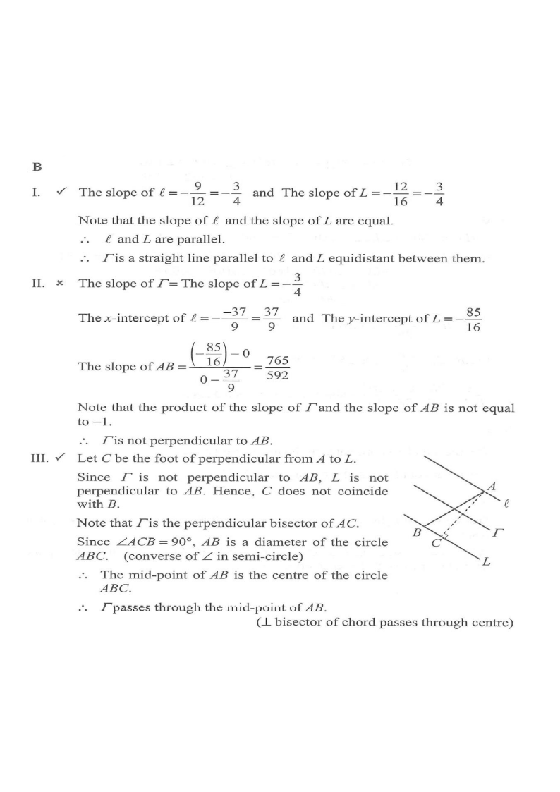

DSE 2023 · 卷二 · Q26
兩平行線的等距軌跡
坐標幾何 · 軌跡 · 選擇題
題目
直線 $\ell$ 與 $L$ 的方程分別為 $9x+12y-37=0$ 與 $12x+16y+85=0$。$\ell$ 與 $x$ 軸交於 $A$，$L$ 與 $y$ 軸交於 $B$。設 $P$ 為平面上動點，使 $P$ 到 $\ell$ 的垂直距離等於 $P$ 到 $L$ 的垂直距離，記 $P$ 的軌跡為 $\Gamma$。 I. $\Gamma$ 與 $L$ 平行 II. $\Gamma$ 與 $AB$ 垂直 III. $\Gamma$ 經過 $AB$ 的中點
A.
只有 I 及 II
B.
只有 I 及 III
C.
只有 II 及 III
D.
I、II 及 III
題解
x
y
平行的兩線
中線 Γ
圖：$\ell$ 與 $L$ 平行，動點到兩線等距的軌跡 $\Gamma$ 是中間的平行線（題解繪）

圖：題解附圖（原試卷）
第 1 步
兩線平行
$\ell$：$y=-\dfrac34x+\dfrac{37}{12}$；$L$：$y=-\dfrac34x-\dfrac{85}{16}$。兩者斜率同為 $-\dfrac34$，故 $\ell\parallel L$。
第 2 步
求軌跡 $\Gamma$
等距軌跡
\(\Gamma:\ 9x+12y+\dfrac{107}{8}=0\)
與兩平行線等距的點形成一條平行線，位置由距離相等決定。
設 $u=9x+12y$，則 $12x+16y=\dfrac{4u}{3}$。由距離相等（除以 $\sqrt{9^2+12^2}=15$ 與 $\sqrt{12^2+16^2}=20$）：\[ \frac{|u-37|}{15}=\frac{\left|\frac{4u}{3}+85\right|}{20} \]化簡得 $4|u-37|=|4u+255|$，解得 $u=-\dfrac{107}{8}$，故 $\Gamma:\ 9x+12y+\dfrac{107}{8}=0$。
第 3 步
檢驗 I
$\Gamma$ 的斜率為 $-\dfrac{9}{12}=-\dfrac34$，與 $L$ 相同，I 正確。
第 4 步
檢驗 II
$A\left(\dfrac{37}{9},0\right)$，$B\left(0,-\dfrac{85}{16}\right)$。\[ m_{AB}=\frac{-\frac{85}{16}-0}{0-\frac{37}{9}}=\frac{765}{592} \]$m_\Gamma\cdot m_{AB}=-\dfrac34\times\dfrac{765}{592}\neq-1$，故 II 錯誤。
第 5 步
檢驗 III
$AB$ 中點 $M\left(\dfrac{37}{18},-\dfrac{85}{32}\right)$ 代入 $\Gamma$：\[ 9\cdot\frac{37}{18}+12\left(-\frac{85}{32}\right)+\frac{107}{8}=\frac{37}{2}-\frac{255}{8}+\frac{107}{8}=0 \]故 $M$ 在 $\Gamma$ 上，III 正確。
答案
B
（只有 I 及 III）
練習
同類新題
題目.
求與直線 $y=2x+1$ 及 $y=2x-5$ 等距的直線方程。
顯示題解
第 1 步.
兩線平行，等距線亦平行，設 $y=2x+c$
第 2 步.
$c=\dfrac{1+(-5)}{2}$
答案：$y=2x-2$
‹ 上一題
目錄
下一題 ›